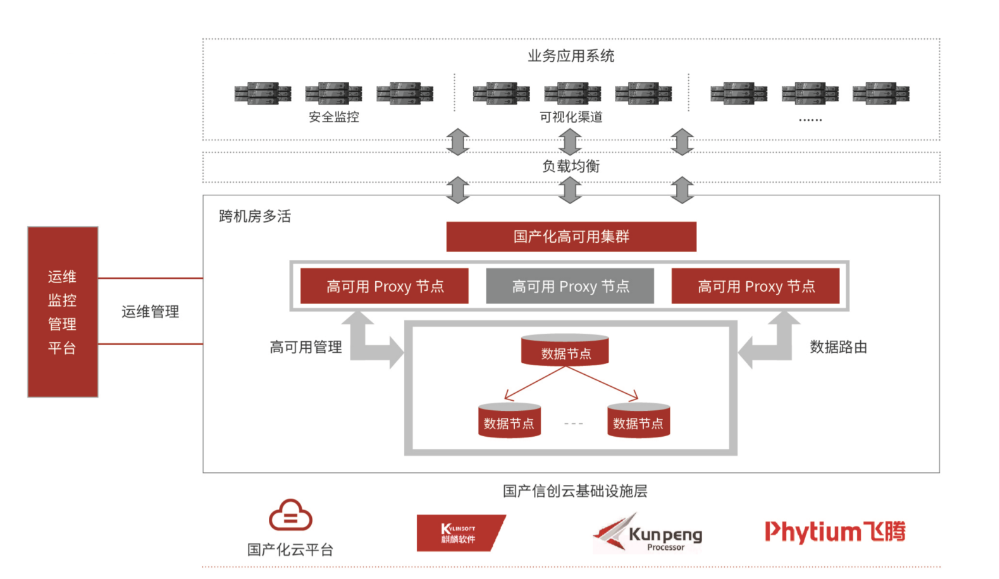

国有大型商业银行小机下移项目
国有大型商业银行小机下移项目
项目背景
为支撑银行业务的快速发展需求，保证银行核心应用系统平稳可靠运行，实现业务和技术快速创新，保证核心技术自主可控，某国有大型银行将以核心系统代表的业务系统从以大机、小机代表的集中式数据库下移到全国产架构平台的自主可控数据库产品。通过数据库底层县础服务能力的构建，提升对国产化数据库的各项支撑能力，以响应当前金融科技创新应用和全行转型发展的要求，达到自主可控的目标。
建设方案

成果价值
• 万里数据库与银行科技公司联手，打造自主可控的高可用国产数据阵集群，配套覆盖全生命周期的运维管控平台
• 基于全国产化架构平台，实现对银行关键重要业务小机下移的支撑
• 基于国产化云平台，构建便捷高效的金融云数据库解决方案
• 全冗余高可靠架构，跨机房多活部署，节点故障切按RPO=0、RTO＜60S
•提供标准 MySQL通信协议，兼容 MySOL生态，业务适配过程平滑便捷